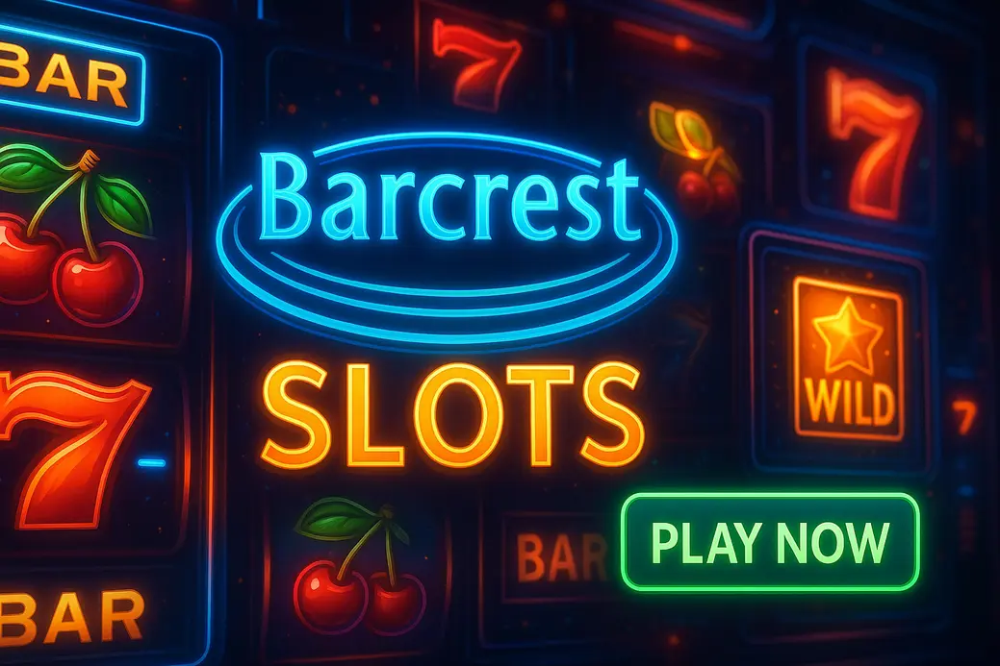

Barcrest Slots

Last Updated: 7 October 2026 | Verified by iGaming experts
Barcrest slots are proper UK slot history: fruit-machine roots, pub-style bonus trails, cheeky Irish pots, and enough Rainbow Riches spin-offs to fill a damn arcade. The online versions keep that familiar Barcrest gaming feel, but the maths can bite if you treat Big Bet or high-volatility bonus rounds like free money.
The short version: Barcrest games are best for players who enjoy character, recognisable features and medium-paced bonus hunting. They are not the slickest-looking slots next to Nolimit City or Hacksaw, but they still have that “one more spin” pull.
Rainbow Riches Megaways
Rainbow Riches Megaways takes Barcrest’s biggest brand and bolts it onto the Big Time Gaming engine. You get up to 117,649 ways, cascading wins, extra symbols in free spins and that familiar leprechaun energy without the old-school fixed-payline feel.
The RTP is commonly listed at 95%, and the volatility sits high enough to make dead patches feel bloody rude. The upside is obvious: Megaways gives the game proper ceiling. The trade-off is that the base game can chew through a casual £20 balance faster than classic Rainbow Riches Pick n Mix.
Thai Flower
Thai Flower is one of the calmer Barcrest slot games, built around stacked floral symbols, 20 paylines and a more traditional video-slot rhythm. It does not scream at you with a thousand mechanics. Honestly, that is part of the appeal if you want a slot you can read after three spins.
The game usually sits near the 95% RTP mark, with medium volatility. Wins feel steadier than Megaways, but the top end is less exciting. That is the weakness: Thai Flower is pretty, neat and playable, yet it lacks the “pub fruitie going mental” personality that made Barcrest famous.
Snow Leopard
Snow Leopard is a clean, icy Barcrest casino slot with stacked wilds and a straightforward free spins feature. It is the sort of game that works nicely on mobile because the reels are uncluttered and the symbols stay readable on a smaller screen.
Expect RTP in the 95% region, with medium volatility. The useful bit: stacked wilds can create chunky screen coverage when they land in the right place, but long gaps between meaningful hits are part of the package. The weakness is theme depth. Snow Leopard looks crisp, but it does not have the brand charm of Rainbow Riches or the Monopoly titles.
Rainbow Riches Pick n Mix
Rainbow Riches Pick n Mix is one of the best examples of Barcrest knowing its audience. Instead of forcing one bonus, it lets you choose from several mini-features, including familiar Rainbow Riches-style pots and prize trails.
The RTP commonly lands near 95%, and the volatility depends on how you approach the feature choice. Safer picks feel less dramatic. Riskier picks give that lovely “go on, be massive” tension but punish impatience. The concrete tip: do not keep changing feature style because the last one missed. That is gambler’s fallacy wearing a green hat.
Mighty Black Knight
Mighty Black Knight leans into fantasy armour, sword-and-shield symbols and bonus spins with expanding potential. It has a more serious tone than Barcrest’s Irish catalogue, so it suits players who want the provider’s mechanics without leprechauns dancing all over the screen.
The downside is pace. Mighty Black Knight can feel flat when the bonus stays away, and the base game is not as characterful as Rainbow Riches. Still, it has a clear layout, sensible bet controls and enough volatility to keep bonus hunters interested without turning every spin into chaos.
Action Bank
Action Bank is older-school Barcrest through and through: fruit symbols, cash values, ladders and bonus nudges that feel lifted from physical Barcrest slot machines. If you grew up seeing pub cabinets flashing beside the bar, this one scratches that itch.
The trade-off is presentation. Compared with modern barcrest casino slots like Rainbow Riches Megaways, Action Bank looks dated. But it also loads fast, explains itself quickly and does not bury the player under feature menus. That simplicity is still valuable, especially on a lunch-break mobile session.
Big Bet Feature in Barcrest Slots
The Big Bet feature is Barcrest’s way of saying: “pay more per spin, unlock a juicier version of the game.” It is exciting, but it is also where bankrolls get punched in the ribs. A £0.20 base spin turning into a £1 Big Bet spin changes the session completely.
Risk-wise, treat Big Bet like a separate game mode. If your normal slot budget is £30, do not fire Big Bet spins like they cost the same as base play. They do not. The feature can improve access to bonus extras, enhanced prizes or side mechanics, but it also reduces the number of spins your balance can survive.
Big Bet in Monopoly: The Big Event
Monopoly: The Big Event is one of the better-known Barcrest games using the Big Bet idea. The licence gives it instant familiarity, with board-game visuals, property-style rewards and that satisfying Monopoly sound design. The Big Bet option boosts the drama because every spin feels closer to an event trigger.
The issue is cost-per-decision. It is very easy to justify the higher stake because the Monopoly skin feels friendly. That is the trap. The game has an RTP commonly shown near 95%, but RTP does not protect a short session from variance. If you only have ten Big Bet spins in the tank, the maths has very little time to behave.
The Rainbow Riches Phenomenon
Rainbow Riches became the Barcrest flagship because it blended familiar UK fruit-machine ideas with an instantly recognisable Irish theme. Pots of gold, cheeky bonus names, simple gamble choices and colourful screens made it feel approachable even to players who did not care about paylines or volatility.
By the way, the brand works because it is readable. You know when a feature is close, you know what the symbols mean, and you know the game wants you to chase that pot. That clarity is powerful. The weakness is repetition: after enough spin-offs, some Rainbow Riches titles feel like remixes rather than fresh ideas.
Loads of Spinoffs
There are loads of Rainbow Riches spin-offs: Rainbow Riches Reels of Gold, Rainbow Riches Pots of Gold, Rainbow Riches Megaways, Rainbow Riches Pick n Mix and more. Each one tweaks the formula, but the core promise stays the same: bright visuals, Irish bonus energy and a feature that looks closer than it truly is.
If you like this, try that: Lucky Larry’s Lobstermania 2 if you want an old-school character slot with bonus charm, though its pacing feels dated; Fishin’ Frenzy if you like simple collection tension, but the base game is brutally plain; Book of Dead if you want higher volatility and a famous expanding-symbol feature, although it can be ice cold for long stretches.
Top RTP Slots from Barcrest
RTP matters, but it is not the whole story. A 95% Barcrest slot can feel friendlier than a 96% bruiser if the volatility is lower and the bonus frequency is kinder. Still, UK players should always open the paytable because barcrest casino versions can run different RTP profiles by operator.
The strongest approach is to combine RTP with stake control. A higher-paying slot does not excuse oversized bets. Honestly, RTP is long-term theory; your Saturday night balance lives in short-term variance.
| Barcrest slot | Common RTP area | Volatility feel | Main trade-off |
|---|---|---|---|
| Rainbow Riches Megaways | 95% | High | Big potential, rough base-game droughts |
| Thai Flower | 95% | Medium | Smoother play, lower excitement ceiling |
| Snow Leopard | 95% | Medium | Readable mobile play, lighter theme personality |
| Monopoly: The Big Event | 95% range | Medium-high | Fun licence, Big Bet can drain funds fast |
Average RTP from Barcrest Games
The average RTP from Barcrest games tends to sit in the 95% band. That is a bit lower than the 96% many slot nerds love to see, but it is not automatically poor. The problem starts when a casino uses a reduced RTP build and the player never checks.
Concrete habit: tap the info icon before the first paid spin. On mobile, it is usually tucked near the menu or three-line icon. The search bar actually works at many modern casinos too, so type “Barcrest” or “Rainbow Riches” instead of scrolling through 2,000 games like a lost tourist.
Higher Paying Slots
Within the Barcrest catalogue, higher-paying titles are less about giant advertised RTP and more about picking games with sensible volatility for your budget. Thai Flower and Snow Leopard suit smaller sessions better than Rainbow Riches Megaways, because the bankroll does not face the same level of swing.
A common mistake is chasing the slot with the flashiest max win while ignoring bet size. Another is turning on turbo spin while distracted; the spin button is a menace on mobile when your thumb gets lazy. Keep animation speed normal until you understand how quickly the balance drops.
- Using Big Bet from spin one without setting a separate limit.
- Assuming every Rainbow Riches game has the same RTP and volatility.
- Playing bonus money without checking whether Barcrest slot games contribute 100% to wagering.
Acquisition by Scientific Games
Barcrest was acquired by Scientific Games in 2011, which pushed the brand deeper into online distribution and larger casino networks. Scientific Games later became part of the wider Light & Wonder identity, but Barcrest remains the name players connect with Rainbow Riches and classic UK slot design.
The upside of that acquisition was reach. Barcrest content appeared across more online casinos, with stronger platform support and smoother delivery. The trade-off is that the old Barcrest identity feels less independent now. Some newer releases carry the mechanics forward, but the gritty pub-machine soul is less obvious than it was on physical cabinets.
Why play Barcrest slots?
Play Barcrest slots if you want familiar UK-style games with clear features, recognisable brands and low learning curves. They are not the wildest slots online, and they rarely look as cinematic as modern releases from ELK, Push Gaming or Relax Gaming. But they are easy to understand, quick to load and full of small feature teases.
- Rainbow Riches remains instantly recognisable.
- Most games explain wins and bonuses clearly.
- Good fit for mobile portrait play and quick sessions.
- Classic barcrest slot machines fans get real nostalgia.
- RTP often sits near 95%, not premium territory.
- Big Bet modes raise session risk fast.
- Some older games look dated beside newer providers.
- Spin-off fatigue is real with Rainbow Riches.
Payment options depend on the casino, not Barcrest itself. You will usually see compact cashier choices like 💳 Debit Card, 🏦 Bank Transfer, ₿ Bitcoin, Ξ Ethereum, 📱 Apple Pay and 💼 e-wallets. One crypto casino test we ran elsewhere had a Bitcoin withdrawal land in 6 hours, but do not treat that as a promise for every operator.
The best practical setup is simple: choose a licensed casino, search for “barcrest”, open the paytable, set a loss limit, then start low. If the bonus does not land, walk away before the game turns into a personal argument.
FAQs
Quick answers first, no waffle. Barcrest has a long UK slot history, but online play still needs the same checks: RTP, stake size, bonus terms and safer gambling tools.
Are Barcrest owned by Scientific Games?
Yes. Barcrest was acquired by Scientific Games in 2011. Scientific Games later moved under the Light & Wonder name, but players still recognise Barcrest as the studio behind Rainbow Riches and several classic UK-style slots.
Practical tip: if you cannot find Barcrest in a casino lobby, search for Rainbow Riches instead. Casinos often list the famous game brand more clearly than the studio name.
Do Barcrest make Rainbow Riches Slots?
Yes. Rainbow Riches is the signature Barcrest slot family. It includes titles such as Rainbow Riches Megaways, Rainbow Riches Pick n Mix and Rainbow Riches Reels of Gold.
Practical tip: do not assume all Rainbow Riches games play the same. Megaways is swingier, Pick n Mix gives more choice, and older versions feel closer to traditional UK fruit machines.
When were Barcrest founded?
Barcrest was founded in 1968. The company built its reputation through land-based fruit machines before becoming a familiar name in online casino slots.
Practical tip: if you enjoy older cabinet-style gameplay, Action Bank and classic Rainbow Riches titles feel closer to those roots than the newer Megaways releases.
Do Barcrest slots have fair RTPs?
Yes, Barcrest slots generally have fair RTPs, with many online titles sitting near 95%. That is playable, but it is not the highest band in the market.
Practical tip: always check the in-game paytable before wagering. A casino can offer a different RTP version, and that tiny percentage difference matters over long play.
Read also
Slots are entertainment, not income. Set limits, take breaks and stop if the fun has gone. If gambling feels hard to control, use blocking tools and speak to a support service.
BeGambleAware GamCare UKGC GamStop